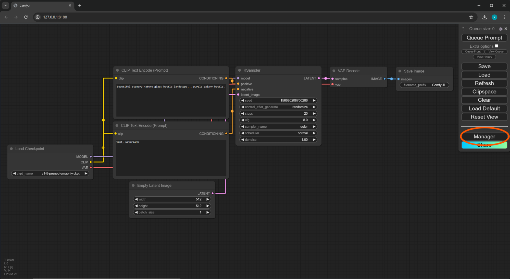

To generate AI images with ComfyUI on Rocky Linux you need the following prerequisites:
- A Python 3.11 installation (i.e. python3.11, pip and python3-virtualenv packages).
- An hardware accelerated PyTorch installation appropriate for your GPU.
- The git tool.
- A copy of the contents of the ComfyUI GitHub repository.
- A copy of the contents of the ComfyUI-Manager GitHub repository.
- Some extra Python modules required by ComfyUI (installed via pip).
- Some ComfyUI custom nodes (i.e. community developed ComfyUI plugins).
- 70GB of disk space to install some AI models (also known as checkpoints).
This documentation will guide you through the installation process of all these prerequisites.
Administrator (i.e. sudo) privileges are required for some parts of this guide.
OPEN A TERMINALApp Grid (Super+A) -> search "terminal" -> Terminal |
[albert@linuxbox] [~] > sudo mkdir -p /opt/comfyui
Plan for enough disk space! ComfyUI (including AI models required for this tutorial) uses about 70GB of disk space.
[albert@linuxbox] [~] > sudo chmod 777 /opt/comfyui
The chmod command enables read/write permissions for our destination directory.
[albert@linuxbox] [~] > cd /opt/comfyui [albert@linuxbox] [/opt/comfyui]
[albert@linuxbox] [/opt/comfyui] > sudo dnf install git python3.11 pip python3-virtualenv Last metadata expiration check: 0:00:17 ago on Fri 12 Jul 2024 04:02:21 PM EDT. Package git-2.43.0-1.el9.x86_64 is already installed. Dependencies resolved. ================================================================================ Package Arch Version Repository Size ================================================================================ Installing: python3-pip noarch 21.2.3-8.el9 appstream 1.7 M python3-virtualenv noarch 20.21.1-7.el9 epel 202 k python3.11 x86_64 3.11.7-1.el9_4.1 appstream 26 k Upgrading: git x86_64 2.43.5-1.el9_4 appstream 50 k git-core x86_64 2.43.5-1.el9_4 appstream 4.4 M git-core-doc noarch 2.43.5-1.el9_4 appstream 2.7 M perl-Git noarch 2.43.5-1.el9_4 appstream 37 k Installing dependencies: libnsl2 x86_64 2.0.0-1.el9.0.1 appstream 30 k mpdecimal x86_64 2.5.1-3.el9 appstream 85 k python3-distlib noarch 0.3.2-1.el9 epel 192 k python3-filelock noarch 3.7.1-1.el9 epel 24 k python3-platformdirs noarch 2.5.4-1.el9 epel 31 k python3-wheel-wheel noarch 1:0.36.2-8.el9 crb 42 k python3.11-libs x86_64 3.11.7-1.el9_4.1 appstream 9.3 M python3.11-pip-wheel noarch 22.3.1-5.el9 appstream 1.4 M python3.11-setuptools-wheel noarch 65.5.1-2.el9 appstream 712 k python3.11-wheel-wheel noarch 0.38.4-3.el9 crb 42 k Transaction Summary ================================================================================ Install 13 Packages Upgrade 4 Packages Total download size: 21 M Is this ok [y/N]: y
At the Is this OK [y/N]: prompt, type y and press ENTER.
The DNF package manager installs git, pip, python, virtualenv and dependencies.
Note that some packages require access to the EPEL and CRB repositories.
Use dnf repolist to check which repositories are installed on your system.
[albert@linuxbox] [/opt/comfyui] > git clone https://github.com/comfyanonymous/ComfyUI.git Cloning into 'ComfyUI'... remote: Enumerating objects: 11530, done. remote: Counting objects: 100% (116/116), done. remote: Compressing objects: 100% (82/82), done. remote: Total 11530 (delta 53), reused 72 (delta 33), pack-reused 11414 Receiving objects: 100% (11530/11530), 5.63 MiB | 4.18 MiB/s, done. Resolving deltas: 100% (7778/7778), done.
The git clone command downloads all the files from the ComfyUI GitHub repository into /opt/comfyui/ComfyUI/.
[albert@linuxbox] [/opt/comfyui] > python3.11 -m venv ./venv
Python creates a Python 3.11 virtual environment that is self-contained inside the /opt/comfyui/venv directory.
[albert@linuxbox] [/opt/comfyui] > source ./venv/bin/activate (venv) [albert@linuxbox] [/opt/comfyui]
The activate shell script activates our self-contained Python environment.
The (venv) at the start of our command prompt tells us that our virtual environment is active.
(venv) [albert@linuxbox] [/opt/comfyui]
> pip install --upgrade pip
Requirement already satisfied: pip in ./venv/lib/python3.9/site-packages (21.2.3)
Collecting pip
Downloading pip-24.1-py3-none-any.whl (1.8 MB)
|████████████████████████████████| 1.8 MB 2.2 MB/s
Installing collected packages: pip
Attempting uninstall: pip
Found existing installation: pip 21.2.3
Uninstalling pip-21.2.3:
Successfully uninstalled pip-21.2.3
Successfully installed pip-24.1
The pip Python package manager updates itself to the latest version.
pip is used to install Python modules from the PyPI repository.
[... output truncated ...] Installing collected packages: nvidia-nvjitlink-cu12, nvidia-cusparse-cu12, nvidia-cublas-cu12, mpmath, MarkupSafe, filelock, typing-extensions, triton, sympy, nvidia-nvtx-cu12, nvidia-nccl-cu12, nvidia-cusolver-cu12, nvidia-curand-cu12, nvidia-cufft-cu12, nvidia-cudnn-cu12, nvidia-cuda-runtime-cu12, nvidia-cuda-nvrtc-cu12, nvidia-cuda-cupti-cu12, networkx, jinja2, fsspec, torch, pillow, numpy, torchvision, torchaudio Successfully installed MarkupSafe-2.1.5 filelock-3.15.4 fsspec-2024.6.0 jinja2-3.1.4 mpmath-1.3.0 networkx-3.2.1 numpy-2.0.0 nvidia-cublas-cu12-12.1.3.1 nvidia-cuda-cupti-cu12-12.1.105 nvidia-cuda-nvrtc-cu12-12.1.105 nvidia-cuda-runtime-cu12-12.1.105 nvidia-cudnn-cu12-8.9.2.26 nvidia-cufft-cu12-11.0.2.54 nvidia-curand-cu12-10.3.2.106 nvidia-cusolver-cu12-11.4.5.107 nvidia-cusparse-cu12-12.1.0.106 nvidia-nccl-cu12-2.20.5 nvidia-nvjitlink-cu12-12.5.40 nvidia-nvtx-cu12-12.1.105 pillow-10.3.0 sympy-1.12.1 torch-2.3.1+cu121 torchaudio-2.3.1+cu121 torchvision-0.18.1+cu121 triton-2.3.1 typing-extensions-4.12.2
The pip package manager installs PyTorch for NVIDIA CUDA 12.1 inside our self-contained Python environment.
Make sure you have working NVIDIA CUDA drivers. Use nvidia-smi to check if CUDA is installed on your system.
AMD GPU users should install the ROCM version of PyTorch instead:
pip install torch torchvision torchaudio --extra-index-url https://download.pytorch.org/whl/rocm6.0
(venv) [albert@linuxbox] [/opt/comfyui]
> pip install -r ./ComfyUI/requirements.txt
Requirement already satisfied: torch in ./venv/lib/python3.9/site-packages (from -r ./ComfyUI/requirements.txt (line 1)) (2.3.1+cu121)
Collecting torchsde (from -r ./ComfyUI/requirements.txt (line 2))
Downloading torchsde-0.2.6-py3-none-any.whl.metadata (5.3 kB)
Requirement already satisfied: torchvision in ./venv/lib/python3.9/site-packages (from -r ./ComfyUI/requirements.txt (line 3)) (0.18.1+cu121)
Requirement already satisfied: torchaudio in ./venv/lib/python3.9/site-packages (from -r ./ComfyUI/requirements.txt (line 4)) (2.3.1+cu121)
Collecting einops (from -r ./ComfyUI/requirements.txt (line 5))
Downloading einops-0.8.0-py3-none-any.whl.metadata (12 kB)
Collecting transformers>=4.25.1 (from -r ./ComfyUI/requirements.txt (line 6))
Downloading transformers-4.41.2-py3-none-any.whl.metadata (43 kB)
━━━━━━━━━━━━━━━━━━━━━━━━━━━━━━━━━━━━━━━━ 43.8/43.8 kB 1.3 MB/s eta 0:00:00
Collecting safetensors>=0.4.2 (from -r ./ComfyUI/requirements.txt (line 7))
Downloading safetensors-0.4.3-cp39-cp39-manylinux_2_17_x86_64.manylinux2014_x86_64.whl.metadata (3.8 kB)
[... output truncated ...]
The pip package manager installs Python modules required by ComfyUI inside our self-contained Python environment.
(venv) [albert@linuxbox] [/opt/comfyui] > cd ./ComfyUI/custom_nodes (venv) [albert@linuxbox] [/opt/comfyui/ComfyUI/custom_nodes] %
(venv) [albert@linuxbox] [/opt/comfyui/ComfyUI/custom_nodes] > git clone https://github.com/ltdrdata/ComfyUI-Manager.git Cloning into 'ComfyUI-Manager'... remote: Enumerating objects: 10964, done. remote: Counting objects: 100% (1206/1206), done. remote: Compressing objects: 100% (346/346), done. remote: Total 10964 (delta 913), reused 1048 (delta 859), pack-reused 9758 Receiving objects: 100% (10964/10964), 8.54 MiB | 6.99 MiB/s, done. Resolving deltas: 100% (7979/7979), done.
The git clone command downloads and installs ComfyUI-Manager from the ComfyUI-Manager GitHub repository in the /opt/comfyui/ComfyUI/custom_nodes/ directory.
(venv) [albert@linuxbox] [/opt/comfyui/ComfyUI/custom_nodes] > cd /opt/comfyui (venv) [albert@linuxbox] [/opt/comfyui/]
(venv) [albert@linuxbox] [/opt/comfyui/] > nano ./comfyui.sh
The nano text editor creates an empty text file at /opt/comfyui/comfyui.sh.
You can use any text editor to edit the comfyui.sh file.
#!/bin/bash #Activate the self-contained Python envrionment. source /opt/comfyui/venv/bin/activate #Launch ComfyUI Server. python3 /opt/comfyui/ComfyUI/main.py
If you do not have a GPU compatible with ComfyUI, you can launch in (slow!) CPU-only mode by using main.py --cpu at the end of the last line instead.
(venv) [albert@linuxbox] [/opt/comfyui] > chmod +x ./comfyui.sh
(venv) [albert@linuxbox] [/opt/comfyui] % > sudo ln -s /opt/comfyui/comfyui.sh /usr/local/bin/comfyui
Since /usr/local/bin is in the the $PATH by default, a link from /opt/comfyui/comfyui.sh to /usr/local/bin/comfyui makes the comfyui command accessible from anywhere.
(venv) [albert@linuxbox] [/opt/comfyui]
> comfyui
[START] Security scan
[DONE] Security scan
## ComfyUI-Manager: installing dependencies done.
** ComfyUI startup time: 2024-06-25 19:29:07.259501
** Platform: Linux
** Python version: 3.9.18 (main, Jan 24 2024, 00:00:00)
[GCC 11.4.1 20231218 (Red Hat 11.4.1-3)]
** Python executable: /opt/comfyui/venv/bin/python3
** Log path: /opt/comfyui/comfyui.log
Prestartup times for custom nodes:
0.2 seconds: /opt/comfyui/ComfyUI/custom_nodes/ComfyUI-Manager
Total VRAM 15344 MB, total RAM 15344 MB
pytorch version: 2.3.1+cu121
Set vram state to: DISABLED
Device: cpu
/opt/comfyui/venv/lib64/python3.9/site-packages/torch/cuda/__init__.py:619: UserWarning: Can't initialize NVML
warnings.warn("Can't initialize NVML")
Using sub quadratic optimization for cross attention, if you have memory or speed issues try using: --use-split-cross-attention
### Loading: ComfyUI-Manager (V2.42)
### ComfyUI Revision: 2284 [69d710e4] | Released on '2024-06-25'
Import times for custom nodes:
0.0 seconds: /opt/comfyui/ComfyUI/custom_nodes/websocket_image_save.py
0.1 seconds: /opt/comfyui/ComfyUI/custom_nodes/ComfyUI-Manager
Starting server
To see the GUI go to: http://127.0.0.1:8188
[ComfyUI-Manager] default cache updated: https://raw.githubusercontent.com/ltdrdata/ComfyUI-Manager/main/model-list.json
[ComfyUI-Manager] default cache updated: https://raw.githubusercontent.com/ltdrdata/ComfyUI-Manager/main/alter-list.json
[ComfyUI-Manager] default cache updated: https://raw.githubusercontent.com/ltdrdata/ComfyUI-Manager/main/github-stats.json
[ComfyUI-Manager] default cache updated: https://raw.githubusercontent.com/ltdrdata/ComfyUI-Manager/main/custom-node-list.json
[ComfyUI-Manager] default cache updated: https://raw.githubusercontent.com/ltdrdata/ComfyUI-Manager/main/extension-node-map.json
The ComfyUI server is now running.
Google Chrome is recommended but ComfyUI will work in most browsers.
http://127.0.0.1:8188The ComfyUI user interface appears inside the web browser tab. Make sure the Manager button is in the tool bar. Bookmark this tab for easy access in the future. 
To shutdown the ComfyUI server press CTRL+C in the Terminal where ComfyUI server is running.
(Don't shutdown ComfyUI yet, will still have some things to configure!)
To launch ComfyUI again in the future, simply open a Terminal and run comfyui.
Yes. The ComfyUI interface is up and running on my computer.